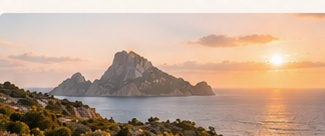
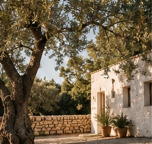
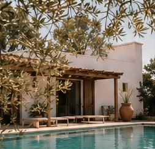
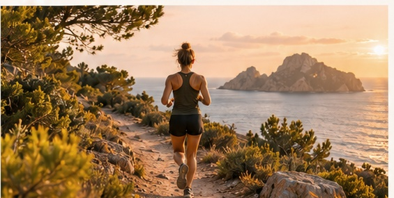
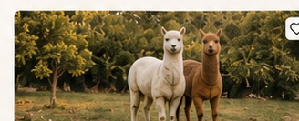

Saved.
Your favourite stays and experiences, together in one place.
Return when you are ready to travel.
Your saved stays (02)
Discover more stays ↗

Your saved experiences (04)
Explore experiences ↗
Running Ibiza

Tasting Ibiza

Alpacas Ibiza
A trip taking shape
Edit the trip ↗Your journey
04 JUN · Arrival
Can Lluc
Hotel Rural
05 JUN · Morning
Sunrise yoga
05 JUN · Afternoon
Tasting Ibiza
07 JUN · Departure
Coastal running
Your next journey starts here.
All your saved places, ready when you are.